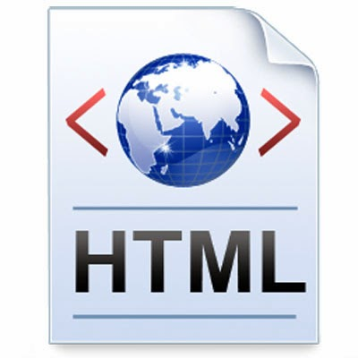
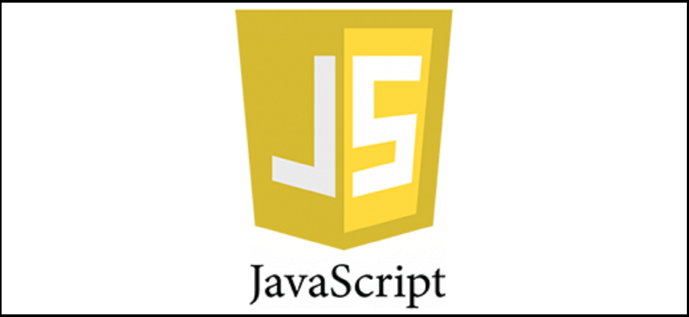

Silahkan Pilih materi yang mau anda ketahui
HTML adalah singkatan dari HyperText Markup Language yaitu bahasa pemrograman standar yang digunakan untuk membuat sebuah halaman web, yang kemudian dapat diakses untuk menampilkan berbagai informasi di dalam sebuah penjelajah web Internet (Browser). HTML dapat juga digunakan sebagai link link antara file-file dalam situs atau dalam komputer dengan menggunakan localhost, atau link yang menghubungkan antar situs dalam dunia internet.
Pengertian CSS CSS adalah singkatan dari Cascading Style Sheets. Berisi rangkaian instruksi yang menentukan bagiamana suatu text akan tertampil di halaman web. Perancangan desain text dapat dilakukan dengan mendefinisikan fonts (huruf) , colors (warna), margins (ukuran), latar belakang (background), ukuran font (font sizes) dan lain-lain. Elemen-elemen seperti colors (warna) , fonts (huruf), sizes (ukuran) dan spacing (jarak) disebut juga “styles”. Cascading Style Sheets juga bisa berarti meletakkan styles yang berbeda pada layers (lapisan) yang berbeda. CSS terdiri dari style sheet yang memberitahukan browser bagaimana suatu dokumen akan disajikan. Fitur-fitur baru pada halaman web lama dapat ditambahkan dengan bantuan style sheet. Saat menggunakan CSS, Anda tidak perlu menulis font, color atau size pada setiap paragraf, atau pada setiap dokumen. Setelah Anda membuat sebuah style sheet, Anda dapat menyimpan kode tersebut sekali saja dan dapat kembali menggunakannya bila diperlukan.
bahasa script, yaitu bahasa yang tidak memerlukan kompiler untuk dapat menjalankanya, tetapi cukup dengan Interpreter. Tidak perlu ada proses kompilasi terlebih dahulu agar program dapat dijalankan. Browser web Netscape Naviagtor dan Internet Exploler adalah salah satu contoh dari salah banyak interpreter, karena kedua browser ini telah dilengkapi dengan Interpreter JavaScript. Tetapi tidak semua browser web dapar menjadi interpreter javascript karena belum tentu browser tersebut dilengkapi dengan interpreter JavaScript
